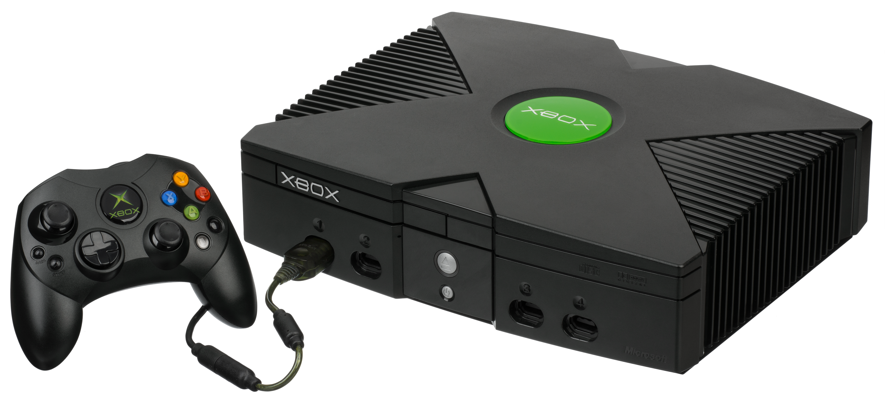

Surgimento do XBOX
O surgimento do Xbox ocorreu em 15 de novembro de 2001, com o lançamento do console original nos Estados Unidos pela Microsoft. O projeto nasceu do desejo da empresa de competir no mercado de videogames contra gigantes como a Sony (PlayStation 2) e a Nintendo (GameCube), além de proteger o ecossistema de PCs com Windows da expansão dessas centrais de entretenimento doméstico.
A Origem da Ideia (1998)
A história começou nos bastidores da Microsoft com uma equipe de quatro engenheiros responsáveis pela tecnologia de gráficos de computador da empresa, a DirectX API (Kevin Bachus, Seamus Blackley, Ted Hase e Otto Berkes). Eles decidiram desmontar alguns computadores portáteis da Dell para construir um protótipo de videogame baseado na arquitetura de um computador pessoal.O objetivo era criar uma máquina que funcionasse como um PC rodando Windows, mas focada inteiramente em jogos de alta performance. Inicialmente, o projeto foi apelidado de "DirectX Box", nome que mais tarde acabou encurtado para apenas Xbox. O console foi revelado oficialmente ao público pelo fundador da empresa, Bill Gates, ao lado do ator e lutador Dwayne "The Rock" Johnson, durante a feira de tecnologia CES de 2001, em Las Vegas. O design robusto do aparelho e a promessa de potência gráfica impressionaram a indústria.

Principais Inovações do Primeiro Xbox
O console trouxe elementos inovadores que mudaram a história do mercado de games de forma permanente:
- Arquitetura de PC: Ele vinha com um processador Intel Pentium III adaptado, 64 MB de memória RAM e uma placa gráfica de ponta desenvolvida pela Nvidia.
- HD Interno: Foi o primeiro videogame de grande relevância a dispensar cartões de memória para salvar o progresso dos jogos, utilizando um disco rígido embutido de 8 GB.
- Porta de Rede Banda Larga: O console já vinha de fábrica com uma entrada Ethernet, projetada exclusivamente para a internet rápida.
- Nascimento de Halo: O jogo Halo: Combat Evolved foi lançado junto com o aparelho, transformando-se instantaneamente no maior símbolo e na principal franquia de exclusividade da marca.
- Xbox Live (2002): Um ano após a chegada do console, a Microsoft lançou o seu serviço online de assinatura. A plataforma revolucionou a experiência de jogabilidade multiplayer pela internet e ditou o padrão moderno para os consoles concorrentes.
Assista a este resumo para entender como a Microsoft deu seus primeiros passos e estruturou os alicerces da marca:
Embora o PlayStation 2 tenha dominado as vendas globais daquela geração, o primeiro Xbox vendeu cerca de 24 milhões de unidades em todo o mundo. Esse resultado validou a permanência da Microsoft no setor de entretenimento digital e abriu caminho para o sucesso do modelo seguinte, o Xbox 360.
Xbox 360 (2005) – A Era de Ouro
Xbox One (2013) – Foco em Entretenimento e a Virada de Jogo
O Xbox One chegou ao mercado em novembro de 2013 com uma proposta polêmica. A Microsoft inicialmente tentou posicionar o console como uma central multimídia de entretenimento para toda a casa, exigindo o Kinect conectado e restrições para jogos usados.
Após uma recepção negativa e liderança de vendas da Sony com o PS4, a divisão Xbox mudou de liderança, assumida por Phil Spencer, que redesenhou a estratégia da marca.
- Foco nos Jogadores: Remoção da obrigatoriedade do Kinect e foco total em jogos digitais e físicos sem barreiras.
- Retrocompatibilidade: O console ganhou a capacidade de rodar jogos do Xbox 360 e do Xbox original de forma gratuita.
- Xbox Game Pass (2017): O lançamento deste serviço mudou a indústria, funcionando como uma "Netflix dos jogos" e permitindo acesso a um catálogo rotativo por uma assinatura mensal.
- Evoluções de Hardware: Lançamento do Xbox One S (mais compacto e com suporte a 4K para mídia) e do Xbox One X (focado em desempenho gráfico nativo de alta potência).